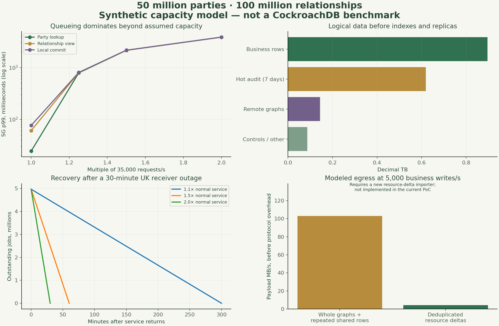

Engineer for the work. Budget for the tails.
50 million parties, 100 million relationships, explicit p95/p99 targets and reproducible capacity scenarios.
Proposed pilot design
This page describes a target design. The local lab and browser models demonstrate bounded subsets; the proposal is not production acceptance. Understand the labels.
Start with the example · Look up a term
Explore the scenarios →
Regional latency, overload, retention, fanout and recovery.
GATED DELIVERY PLANOpen the pilot backlog →
24 actions with owners, dependencies and exit evidence.
REPRODUCIBLE ASSESSMENTRead the full model →
Methods, assumptions, exact outputs and engineering guidance.
Targets to validate in the pilot
| Operation | p95 target | p99 target | Measurement boundary |
|---|---|---|---|
| Regional party lookup | 30 ms | 75 ms | Regional gateway ingress to response; approved indexed ID lookup; no WAN authority call |
| Bounded relationship view | 75 ms | 150 ms | Regional gateway to response; at most 50 rows / 32 KiB; keyset page history/holdings |
| Local business commit + outbox | 100 ms | 250 ms | Regional gateway to durable local success; bounded transaction; does not wait for remote projection |
| Approved federation visibility | 2000 ms | 5000 ms | Owner commit to recipient query visibility; healthy WAN/cells; eligible destinations only |
| Revocation enforced at recipient | 1000 ms | 5000 ms | Owner restriction commit to denied reads; priority epoch channel plus max 5s authority lease incl. clock budget; proposed design |
| Live projection purge acknowledgement | 5000 ms | 30000 ms | Healthy recipient; retained audit/backups excluded; outage purge reported as pending |
The target workload is an assumption
| Dimension | Planning value |
|---|---|
| Cardinality | 50M parties / 100M relationships / 125M participation edges. |
| Normal workload | 10k reads + 1k business writes per second, globally. |
| Design peak | 30k reads + 5k business writes per second; SG 45%, UK 40%, US 15%. |
| Read shape | Indexed key lookup or bounded view: ≤50 rows / 32KiB. Large portfolios, history scans and search are separate workloads. |
| Sharing | 0.8 remote relationship copies on average; minimal party identity to two other physical stores where permitted. |
| Admission | ≤60% of measured limiting capacity at design peak if peak must survive loss of an AZ. |
| Hardware | Limited pilot: 3 nodes/region across 3 AZs. Full-scale rehearsal candidate: SG 9 / UK 9 / US 6 nodes, 16 vCPU + 64GiB + 2TB each; not a verified sizing recommendation. |
The tail grows when queues stop draining

| Selected scenario | SG relationship p99 | Maximum DB demand / capacity | Interpretation |
|---|---|---|---|
| 100M / design peak | 61 ms | 0.88× | Stable in model |
| 100M / 1.25× peak | 796 ms | 1.10× | Finite overloaded queue; not sustainable |
| 100M / cold cache + slower DB | 5707 ms | 1.57× | Finite overloaded queue; not sustainable |
| 100M / 70% Singapore traffic | 3491 ms | 1.35× | Finite overloaded queue; not sustainable |
| 100M / one AZ capacity lost | 3220 ms | 1.33× | Finite overloaded queue; not sustainable |
| 100M / 50% extra DB capacity | 61 ms | 0.59× | Stable in model |
| 100M / 5% of writes hit one party | 33259 ms | 0.90× | Finite overloaded queue; not sustainable |
| 100M / synchronous remote authorisation | 309 ms | 0.88× | Stable in model |
Scale changes the integration design
| PoC behavior | Pilot/scale change | Reason |
|---|---|---|
| Load full owner graph per command/read | Indexed repositories and bounded reads | Dataset size must not enter per-request complexity. |
| Global process lock | Local serializable transactions, per-resource versions, idempotency and bounded retry | Parallelize unrelated parties without weakening business invariants. |
| Rewrite controls across many scopes | Resource/table authority epochs + dependency work queue | One party or table restriction cannot require a massive foreground transaction. |
| Replace entire projection graph | Versioned deltas with atomic parent closure and manifest/inbox update | Avoid repeated indexes, payload and WAN amplification. |
| Duplicate shared party/contact payload by relationship | Canonical resource payload per permitted physical scope with recipient-context checks | Deduplicate bytes without combining entitlements. |
| Check remote home authority on every read | Strict WAN budget OR approved bounded local authority lease | Low local latency and immediate cross-WAN consistency are different contracts. |
| One poller / raw UI snapshot | Partitioned regional relay, priority revocation, materialized aggregates | Bound queue age, retry storms and monitor load. |
Storage is dominated by children and retention
| Central case across three regions | Modeled size |
|---|---|
| Source business rows | 2.40 billion |
| Logical incl. projections, controls and 7-day audit | 1.75 TB |
| Used after 1.7× indexes, 1.35× KV, 1.25× MVCC, RF=3 | 15.0 TB |
| Provisioned at 60% fill | 25.0 TB |
| Audit archive per year before compression/redundancy | 32.3 TB |
Remote authority needs a deliberate contract
The illustrative synchronous WAN case adds a 180ms median round trip and takes relationship p99 to roughly 309ms. A local-read target requires local facts and an approved freshness contract. The proposed alternative uses resource/scope/table epochs plus a maximum five-second authority lease inclusive of clock tolerance. A partition lease must bind a contiguous applied revocation watermark: a heartbeat alone cannot prove no revocation was missed. Refresh active partitions in batches, not every one of 100M scopes every five seconds. This is a proposed pilot design requiring approval; the current PoC still consults source authority.
Priority revocation traffic must stay separate from data backfill. A 30-minute UK receiver outage generates about 4.97M pending jobs in the model. At 1.5× incoming-rate service capacity, recovery takes 60 minutes while new traffic continues. If the destination remains unavailable, show purge pending; do not promise completed deletion.
Method and limits
Sixteen scenarios × three seeds; 360,000 foreground arrivals per run and separate import arrivals. At design peak each run covers roughly ten seconds. This is a finite event model; overload results are growing queues, not steady-state percentiles. Service times, cache misses, retry rates and effective concurrency are assumed. The p99 range across seeds describes random variation, not calibration confidence. Lower population points reuse the same full-scale model capacity and proportionately lower traffic. Real SQL, disk, compaction, fault and long-soak tests remain necessary.
Targets apply by operation/cell/entity to bounded responses, alongside timeout and error rates. Count dropped load-generator iterations and censored timeouts; do not report successful-only percentiles. The actual OPA microbenchmark measured sequential loopback HTTP only and is not a system throughput benchmark.
Primary engineering references
For implementers: engineering brief
Build this component
A focused prompt with scope, contracts and acceptance criteria.
Read the full prompt
Operational isolation decision: use three regional work classes: authority guard, operational delivery and bulk reconciliation. Separate relay paths, queues/topics, worker groups, connection/concurrency budgets and retry/quarantine paths. A policy transaction advances scoped authority and creates a guard intent plus one reconciliation cursor; it must not enumerate affected rows. Operational commits remain local ACID with outbox/audit/idempotency. Operational priority never bypasses current policy. Source restriction commit, remote enforcement and physical convergence are separate milestones. Read the Work isolation page before implementing any queue or policy change. The interactive lab and admission specification are synthetic; the v3 database harness still has its original process lock and serial worker. Use the published capacity model as an explicit hypothesis, never as a database benchmark. Target 50M parties, 100M relationships and the supplied typed child-table distribution. Normal workload is 10k reads/s + 1k writes/s; design peak is 30k reads/s + 5k writes/s globally. Preserve geography, entitlement, purpose and explicit-deny semantics. Use the scale/ scripts and measured workload aggregates to replace assumptions. The v3 runtime remains a PoC with full scans and a process lock; no optimized production data path has been implemented. Build the pilot benchmark, not a benchmark-shaped demo. Generate full indexed child-table cardinality with reproducible degree and policy skew. Use an open arrival model; 60-minute design-peak test and 24-hour normal soak. Report p95/p99/p99.9 per operation and region, errors, dropped iterations, DB resource use, retries, oldest revocation and destination freshness. Replace assumed queue capacity with observations before recommending hardware. Test hot keys, cold caches, background compaction, backup and an AZ loss.